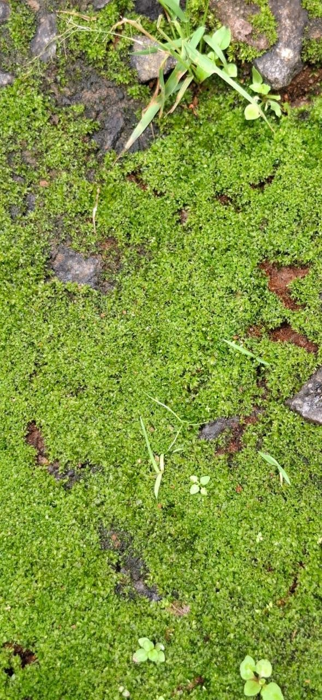
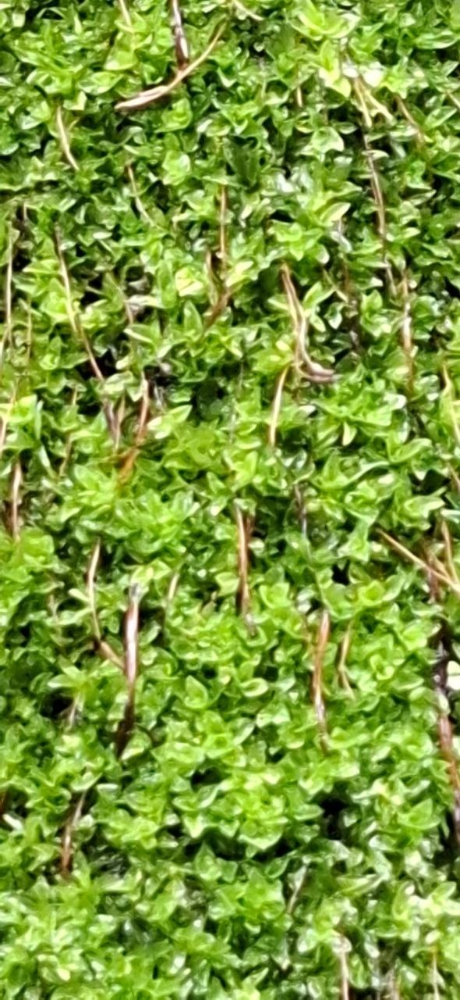
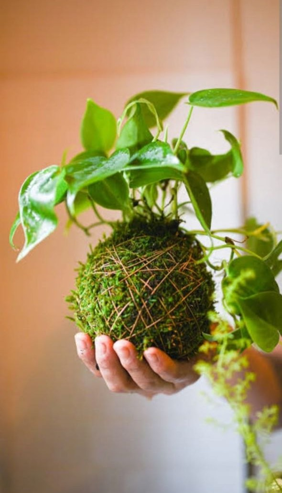

Category: Botany
Written by: ജയശ്രീ
ബോട്ടണിയിൽ ഇതിനെ Bryophytes എന്നാണ് പറയുക. ലോകത്തുള്ള മുഴുവൻ ചെടികളെയും വർഗീകരിക്കുമ്പോൾ പായലുകൾക്കും പന്നൽച്ചെടികൾക്കും ഇടയിലുള്ള സ്ഥാനമാണ് ഇവയ്ക്കുള്ളത്. ഇവരെ സസ്യ ലോകത്തെ ഉഭയ സസ്യങ്ങൾ എന്നറിയപ്പെടുന്നു. കാരണം ഇവ കര സസ്യങ്ങൾ ആണെങ്കിലും ഇവർക്ക് പ്രത്യുൽപാദനം നടക്കണമെങ്കിൽ വെള്ളം ആവശ്യമാണ്. ശരിയായ ഇലയോ കാണ്ഡമോ വേരോ ഇതിന് കാണുന്നില്ല. എന്നാൽ ഇങ്ങനെയൊക്കെ തോന്നിപ്പിക്കുന്ന ഭാഗങ്ങൾ ഉണ്ട് താനും. പരിസ്ഥിതികമായി വളരെ പ്രാധാന്യമുള്ള ഗ്രൂപ്പാണിത്. പാറ പ്രദേശങ്ങളിലേക്ക് ആദ്യം ആധിപത്യ സ്ഥാപിക്കുന്നവർ ലൈക്കനുകൾ എന്ന് പറയുന്ന പ്ലാന്റ് ഗ്രൂപ്പാണ്. ലൈക്കനുകൾ ആയിരക്കണക്കിന് വർഷങ്ങൾ കൊണ്ട് പാറ മണ്ണാക്കുകയും പിന്നീട് അവയിൽ ബ്രയോഫിറ്റുകൾകൾ ആധിപത്യം സ്ഥാപിക്കുകയും ചെയ്യും. ഭൂമിയിൽ ഏതൊരു വനവും രൂപപ്പെടുന്നത് പല ഘട്ടങ്ങളിലൂടെയാണ്. നേരത്തെ സൂചിപ്പിച്ച ഒരു പാറ പ്രദേശമായി മാറുമ്പോൾ രണ്ടാംഘട്ടത്തിൽ അവിടെ എത്തിപ്പെടുന്നവരാണ് മുകളിൽ പറഞ്ഞ Bryophytes.

ഒരു ചെറിയ കൂട്ടിച്ചേർക്കൽ കൂടി. 😁 കൊക്കഡാമ എന്ന് കേട്ടിട്ടുണ്ടോ..? ജപ്പാനിൽ സാധാരണയായി ചെയ്തുവരുന്ന ഒരു പ്ലാന്റിംഗ് സ്ട്രക്ചർ ആണിത്. മണ്ണ് കുഴച്ച് ബോൾ ആക്കി ആ ബോളിനെ മൊത്തം മുകളിൽ പറഞ്ഞ ബ്രയോഫൈറ്റ് അതായത് മോസ് ചെടികൾ കൊണ്ട് പൊതിയും.. ഈ മൺ ബോളിനകത്ത് പൊക്കം കുറഞ്ഞ ഒരു ചെടിയും നട്ടു വെക്കും. ഇതിന് എപ്പോഴും ഈർപ്പം സ്പ്രേ ചെയ്തു കൊടുത്താൽ മതിയാകും. (നമുക്ക് എപ്പോഴും മഴ ചാറ്റൽ കിട്ടുന്ന ഒരു സ്ഥലത്ത് വെച്ചാലും മതി) നമ്മുടെ നാട്ടിലും ഉദ്യാനപാലകർ ഇങ്ങനെയൊക്കെ ചെയ്ത് ഇൻഡോർ ആയിട്ട് വെക്കാറുണ്ട്. നമുക്കും ചെയ്യാവുന്നതേയുള്ളൂ നല്ല മണ്ണ് കുഴച്ച് ഒരു ബോൾ ആക്കി. അതിന് ചുറ്റും ഈ ചെടികൾ പൊതിഞ്ഞു വെച്ച് നടുക്ക് മറ്റൊരു ചെടിയും വെച്ച് വെച്ചാൽ മനോഹരമായി 🙏🏻